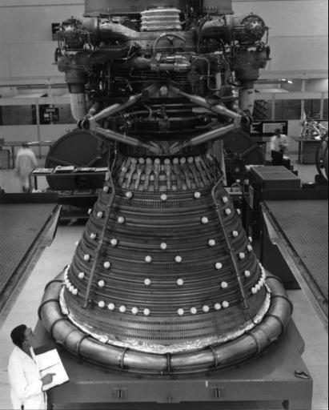
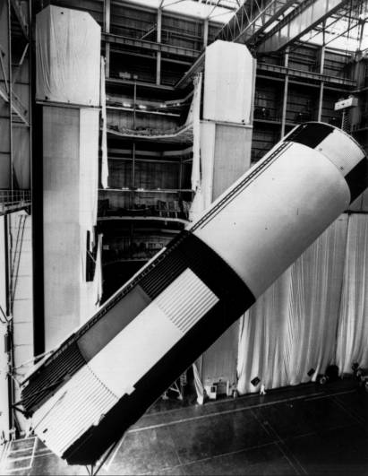
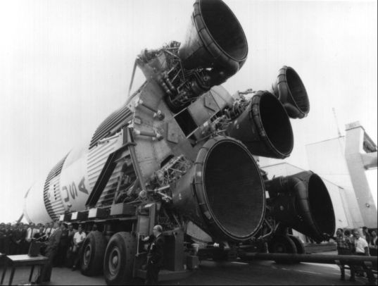
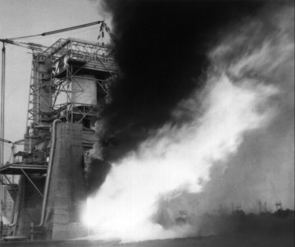
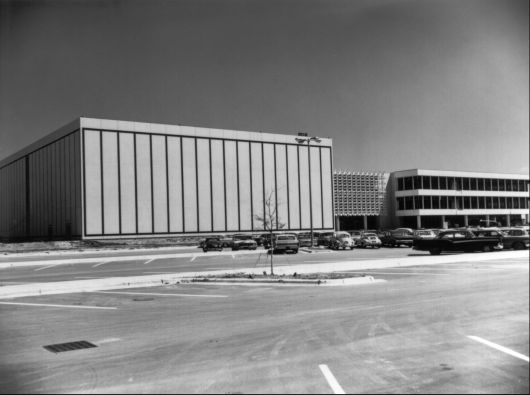
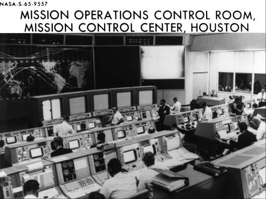
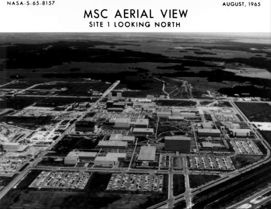

Portents for Operations
While Phillips and Shea worked on Apollo spending, schedules, mission
assignments, and crew selection, Wernher von Braun and his Marshall
Space Flight Center colleagues launched a series of three satellites
that calmed many of the fears about micrometeoroid hazards of manned
space flight in earth orbit. Astronomers had warned about the dangers of
space dust to extended spacecraft flights, but Project Mercury had
encountered no insuperable difficulties. With Gemini plans for manned
spacecraft spending as much as two weeks in space, however, it was
imperative that NASA have data from unmanned missions.
NASA's Office of Advanced Research and Technology and Marshall laid
plans for a vehicle called "Pegasus" and hired the Fairchild
Stratos Corporation to build it. By 1964, preliminary designs had been
completed and ground testing begun. After considering various shapes,
even some resembling parasols, Fairchild adopted a simple flat wing that
would deploy in orbital flight to a span of 30 meters and expose 80
times more surface - a total of 700 square meters - than any previous
detector in orbit.40
The last three Saturn I launches - numbered, in an odd sequence, 9, 8,
and 10,* and called Saturn-Apollo
(SA) or Apollo-Saturn (AS), depending on which documents (Marshall or
Manned Spacecraft Center) were read - carried both Pegasus satellites
and boilerplate (BP) Apollo spacecraft. SA-9 (or AS-103) was launched
from the Cape on 16 February, tossing its two payloads into separate
orbits. During its fourth revolution, the Pegasus registered its first
micrometeoroid hit; two weeks later the count reached only a score; and
by May the total was not more than 70. When the other Pegasus missions,
launched on 23 May and 30 July, encountered as little orbital debris,
Apollo engineers were more confident that micrometeoroids would cause
few problems in earth orbit to the thin-skinned service module and much
less to the command module wrapped in its protective heatshield
cocoon.41
Pegasus provided near-earth data to Apollo; another unmanned vehicle,
Ranger, gave a view of the ultimate goal - the moon. After many failures
and in July 1964 one resounding success, Ranger ended with two sterling
flights, one in February and one in March 1965 - much to the relief and
credit of the Jet Propulsion Laboratory, the parent organization.
Ranger VIII, aimed at the moon's equatorial zone in the Sea
of Tranquillity, transmitted more than 7,000 pictures before it crashed.
Engineers and scientists had an opportunity to study features no more
than 30 centimeters in size. Ranger IX, heading for the
crater Alphonsus, made the three-day trip with scarcely a course
correction. Telemetry from this vehicle, translated and fed through
commercial television, gave the public its first close-up view of the
moon.42
Manned space flight was a beehive of activities in 1965, with the Gemini
program recording five outstanding missions. The Soviet Union had twice
flown its multimanned Voskhod spacecraft - in October 1964 and March
1965 - and the United States was eager to rejoin the competition. On 23
March after a 22-month hiatus in American manned flight, Virgil Grissom
and John Young, in a three-orbit flight aboard Gemini III
fired their spacecraft thrusters and changed their orbit. For the first
time, man was truly controlling a spacecraft and its direction and speed
in space. But this was only a spacecraft qualification flight. More
ambitious missions were ahead for Gemini, to test the abilities of the
astronauts in space and ground crews in the control center and around
the worldwide tracking network in preparation for Apollo.
The next two Gemini missions, IV and V, were
stepped increases in endurance, four days and eight days, each flight
with its individual flavor. James McDivitt and Edward White flew a
four-day mission 3-7 June that featured extravehicular activity and a
practice rendezvous with the second stage of their launch vehicle.
White, using a hand-held jet gun, propelled himself through space and
floated at the end of a snakelike eight-meter tether with considerable
aplomb.** The attempt to maneuver
up to the spent booster stage was not so successful, however, causing
some exponents of rendezvous to worry about the future. But little more
than two months later, 21-29 August, Gordon Cooper and Charles Conrad
embarked on an eight-day voyage and successfully carried out a
"phantom rendezvous," catching an imaginary moving target set
up by the flight controllers. Deputy Administrator Hugh Dryden wrote
President Lyndon Johnson that the success of Gemini V,
clearing the way for a two-week endurance test, "has assured us of
man's capability to travel to the moon and return."43
Although Dryden did not live to see it (he died on 2 December), the year
ended with the most exciting and ambitious space flight up to that time.
Known to many as the "Spirit of '76," the concurrent flight of
two manned Gemini spacecraft proved the feasibility of both
long-duration flight and rendezvous. It began with the launch of
Gemini VII, piloted by Frank Borman and James Lovell, on 4
December. Eleven days later, Walter Schirra and Thomas Stafford flew
Gemini VI-A to a rendezvous with their orbiting compatriots
to cap a banner year in space.44
Gemini's successes, although answering important questions, spawned some
unwelcome suggestions for Apollo. White's spectacular extravehicular
operation touched off plans for a similar exercise in the first manned
Apollo flight; Shea vetoed that idea in a hurry. An even grander scheme
pitted Gemini against Apollo. LEO, for "Large Earth Orbit" -
all the way around the moon - was championed by Charles Mathews and
André Meyer of the Gemini office and subsequently endorsed by
Gilruth and Mueller. Since LEO could put Americans in the vicinity of
the moon earlier than Apollo, it would be a big leap forward in the
space race, which still loomed large in the minds of many people. Four
Russian Luna missions had unsuccessfully attempted soft landings during
1965, demonstrating that the Soviet Union was still interested in the
lunar target. Seamans vetoed LEO, believing Apollo needed no more
competition. But Congress got wind of the plan and started asking
questions. When Representative Olin E. Teague wanted to know if there
would be any advantages to such a mission, Webb answered that it would
be expensive and would still not guarantee success in beating the
Russians to a lunar landing. Apollo was operating on a thin margin of
resources as it was; if Congress wanted to spend more money, he told
Teague, "I believe it would be in the national interest to [give it
to] the Apollo program."45
So Gemini and Apollo were not to be rivals. Then could they perhaps
assist each other? Howard W. Tindall, Jr. (whose specialty was mission
planning and whose "Tindallgrams" achieved local fame), did
not think so.*** They shared the
mutual objectives of rendezvous, docking, and long-duration flight, but
hardware and mission planning were so different and the respective
managers were so busy trying to meet schedules that they could seldom
afford the luxury of keeping abreast of each other's program.46
Apollo also had some operational successes in 1965 - none as spectacular
as the Gemini flights but one at least more breathtaking than expected.
Several dozen newsmen gathered at White Sands Missile Range, New Mexico,
on 19 May to watch Mission A-003, an abort test of a boilerplate
spacecraft at an altitude of 35,000 meters. At 6 that morning, the
Little Joe II ignited and rammed its payload skyward. A few seconds
after liftoff, a fin-vane at the base of the booster stuck and started
the 13-meter-tall spacecraft-booster combination spinning like a bullet.
Twenty-six seconds into the flight and still on a true course, the
vehicle started coming apart. The abort-sensing system signaled the
launch escape tower rocket to fire and pull the spacecraft away at an
altitude of 4,000 meters. While newsmen watched the fluttering remains
of the Little Joe II, BP-22's parachutes lowered it gently to the desert
floor. Apollo had another answer: the launch escape system worked in a
real abort situation.47
Little more than a month later, on 29 June, the launch team in New
Mexico prepared to test an abort off the pad. The year before, a similar
test had proved the escape tower rocket could jerk the spacecraft safely
away from an exploding launch vehicle. But both the spacecraft and its
escape system had since gained weight. In the second test, the rocket
pulled the spacecraft higher in the air and farther downrange than
expected.48

The F-1 engine at upper left, one of five fitted into the Saturn
V's S-IC first stage, being prepared at the Rocketdyne plant in
California for shipment to the Michoud launch vehicle assembly plant in
Louisiana.

An S-IC stage at Michoud, 27 June 1965, is removed from its
vertical assembly tower. After installation of wiring and components,
this ground test version - the first in the Saturn V development program
- would be shipped by barge to Marshall Flight Center in Alabama.
Perhaps one of the more heartening events during 1965 was the
static-firing at the Mississippi Test Facility of the S-IC, the first
stage of the Saturn V. The five F-1 engines, burning for six and a half
seconds, produced the designed 33.4 million newtons (7.5 million pounds)
of thrust, as much power as five Saturn Is lashed together. Going on up
the Saturn V stack, the S-II second stage was static-fired in April and
the S-IVB third stage in August, with excellent results.49 Although the Saturn I, with its ten straight
launch successes, had already proved the clustered-stage concept,
Mueller and his staff breathed easier after the Saturn V tests.

Marshall Director Wernher von Braun (at the microphone) held a
brief ceremony 26 September 1965, accepting the first flight
S-IC.

S-IC-T is fired for 2 1/2 minutes at Marshall in an August 1965
ground test.
Only solar radiation remained a worry of first rank at the end of 1965.
During the year, a Solar Particle Alert Network was set up to study
sunspots and to develop some techniques for predicting solar storms, so
Apollo crews could take protective action against dangerous doses of
radiation. The cyclical nature of sunspot behavior was, fortunately,
fairly well understood. By using existing observatories and adding a few
more (one at Houston), NASA intended to plan Apollo missions to avoid
the periods of greatest solar activity.50
A new hazard discussed with increasing frequency during the year was the
danger of back contamination from pathogenic organisms aboard a
returning lunar spacecraft. The possibility of contaminating other
planets during space exploration had long been recognized; now the risks
of returning materials to the earth after exploratory voyages had to be
faced. The United States Public Health Service was brought in to advise
NASA on care of lunar samples and crews. Sharing the apprehensions,
Congress hastily authorized the construction of a special quarantine
facility in Houston. The Lunar Sample Receiving Laboratory, hurriedly
built during the next two years, was one of the most elaborately
safeguarded biological facilities in the world.51
Another indication that the operational phase of Apollo was approaching
was Mueller's creation in July of a Site Selection Board to recommend
lunar landing areas. Gilruth sent William Lee and William E. Stoney,
Jr., to serve on this board, as well as on the Ad Hoc Surveyor Lunar
Orbiter Utilization Committee (which Gilruth believed belonged in the
same basket, anyway). The next month, John E. Dornbach's Lunar Surface
Technology Branch compiled lists of candidate sites. In October, NASA
announced that ten areas had been selected and that they would be
photographed by Lunar Orbiter cameras during 1966.52
Picking sites and building a facility to handle samples and crews on
their return to earth were good starts toward operations, but some
communications and control systems problems remained to be ironed out.
Early in its planning, NASA had seen the need for a "real-time
computer complex" (RTCC) for instantaneous information on and
control of manned space missions. Located at Goddard during all of
Mercury and the early part of Gemini, the complex linked 17 ground
stations around the globe and permitted observers to monitor manned
flights on virtually a continuous basis. In addition, Mercury, Gemini,
and Apollo needed digital applications in six other areas: premission
planning and analysis; space flight simulations to aid manufacturers and
astronauts; launch operations, so data could be instantly checked and
analyzed; physiological monitoring of crewmen in flight, using
biosensors; postflight mission analyses, so data on each flight could be
catalogued and filed for future reference; and in the arena of worldwide
testing, known to NASA by the fishy-sounding acronym CADFISS, for
computer and data-flow integrated subsystems.

Mission Control Center, Houston.

The mission operations control room during the Gemini V flight in
August 1965. The room is in the windowless part of the building.

Manned Spacecraft Center during the mission. Mission Control is at
the center, just to the right of the multistory building under
construction.
After lengthy technical and administrative arguments, NASA moved the
computer complex to Houston to form an "integrated mission control
center." The center would have four main duties: processing global
signals for display to flight controllers, computing and sending
antenna-aiming directions to the global tracking stations, providing
navigation information to the spacecraft, and simulating all mission
data for personnel training and equipment checkout. By spring of 1965,
Houston's computer complex was nearly ready, with five IBM 7094 model II
computers on the line. Flight Director Chris Kraft assured Mueller the
complex would be ready to control Gemini IV in June, and he
was right. In September, a supplemental Univac 1230 was added to the
complex, and plans were laid to replace the 7094s with new IBM 360 model
75s. Although the 7094s remained in service until 1968, modifications
and upgrading provided a daily capacity of 80 billion calculations.53
Besides the enormous ground-based complexes, American industry had
developed small computers for aeronautics and astronautics. While MIT's
Instrumentation Laboratory was developing the Apollo guidance and
navigation system, a major part of which was the onboard computer,
throughout the computer industry there were breakthroughs in technology,
based on microminiaturization, transistors, integrated circuits,
thin-film memories, high-frequency power conversion, and multilayer
interconnection boards.
Mercury had flown without onboard computers, but Gemini needed a digital
computer and visual displays to control ascent, rendezvous, orbital
navigation, and reentry. IBM delivered the first computer for a Gemini
spacecraft in 1963, but NASA had been shopping around for a computer
source for Apollo even earlier. In May 1962, NASA and MIT had selected
Raytheon. Drawing on MIT's experience with Polaris missiles and nuclear
submarines, Raytheon produced a general-purpose prototype by
mid-1965.
The first Block I computer embodied significant advances over other
computers. But it was soon discontinued because NASA decided to delete
inflight maintenance and because the design was not satisfactory in
either malfunction detection or packaging. The next, or Block II,
version corrected these weaknesses. Weighing 31 kilograms and consuming
only 70 watts of power during normal operation, the Block II
"brains" incorporated redundant systems and had the largest
memory of any onboard spacecraft computer to that time (37,000 words).54
* SA-9 was the last of the eight S-1
first stages built by Marshall; SA-8 was the first built by Chrysler at
the Michoud facility in Louisiana. Chrysler needed more time to develop
its stage, so SA-9 flew first.
** Soviet Cosmonaut Aleksey Leonov
had taken the world's first space walk when he left the confines of
Voskhod II on 18 March 1965.
*** Some Apollo engineers did not
agree with Tindall. James C. Church thought Apollo might learn something
about program control from Gemini, and Calvin H. Perrine wanted some
expert advice on ground test programs from the office that had just gone
through that experience. Duncan believed the Gemini sextant might be
modified for use on Apollo. Rolf W. Lanzkron and Joseph P. Loftus, Jr.,
were anxious to learn anything they could from the crews that they might
apply to Apollo. And H. B. Graham of North American, who made a
comparison of Apollo and Gemini checkout procedures, assumed that
further study might show some of the Gemini measures applicable to
Apollo.
40. John Beltz, Roger Bilstein, and
Mitchell Sharpe, "The Saturn Project: A Technological History of
the Apollo Saturn Launch Vehicles," comment ed., 2 Jan. 1973, pp.
676-720; Lee B. James memos, "Project Name for MMC," 3 and 13
Aug. 1964; Perrine to Maynard, "Meteoroid protection for LEM and
Block II," 28 Aug. 1964; Shea to NASA Hq., Attn.: Mueller,
"Apollo spacecraft requirements for definition of the
micrometeoroid hazard," 15 March 1965.
41. Leo L. Jones and A. Ruth Jarrell,
"History of the George C. Marshall Space Flight Center, from
January 1 through December 31, 1965," 1, April 1968, pp. 32-33;
NASA, "Project: Pegasus-Saturn I," press kit, news release
65-38, 11 Feb. 1965; Edward R. Mathews TWX to NASA Hq. et al.,
"SA-9 Apollo Flash Report No. 1," 17 Feb. 1965; Mueller and
Raymond L. Bisplinghoff to Admin., NASA, "Pegasus A/SA-9 Saturn I
Flight Mission, Post Launch Report No. 1," 19 Feb. 1965, with enc.;
NASA, "Pegasus I Relays Data on Meteoroid Hazards in Space,"
news release 65-68, 26 Feb. 1965; NASA, "Project: Pegasus II
(SA-8)," press kit, news release 65-151, 6 May 1965; Mueller and
Bisplinghoff to Admin., NASA, "Pegasus II/SA-8 Saturn I Flight
Mission, Post Launch Report No. 1," 21 June 1965, with enc.; NASA,
"Project: Pegasus C," press kit, news release 65-232, 14 July
1965; "Pegasus III Launch Caps NASA's Saturn I Program," NASA
news release 65-253, 30 July 1965; Mueller and Bisplinghoff to Admin.,
NASA, "Pegasus III/SA-10 Saturn I Flight Mission Post Launch Report
No. 1," 16 Aug. 1965, with enc.
42. R. Cargill Hall, Project
Ranger: A Chronology, JPL/HR-2 (Washington, 1971), pp. 531-32; G.
P. Callas to Maynard, Robert E. Vale, and John E. Dornbach,
"Bellcomm report, 'Ranger VII Photo Analysis - Preliminary
Measurements of Apollo Landing Hazards' C. J. Byrne," 22 April
1965, with enc., Bellcomm technical memorandum 65-1012-2, subj. as
stated; NASA, "Project: Rangers C & D," press kit, news
release 65-25, 4 Feb. 1965; NASA, "Ranger IX to Send World's First
Live Moon Photos," news release 65-96, 23 March 1965.
43. A. A. Leonov, "The First Egress
of Man into Space," paper presented at XVIth International
Astronautics Congress, Athens, 13-18 Sept. 1965, NASA TT F-9727, October
1965; Barton C. Hacker and James M. Grimwood, On the Shoulders of
Titans: A History of Project Gemini, NASA SP-4203 (Washington,
1977), chaps. X, XI; Hugh L. Dryden, "Significance of Gemini V
Accomplishments," Cabinet report to the President, 11 Sept.
1965.
44. Hacker and Grimwood, On the
Shoulders of Titans, chap. XII; Jerome C. Hunsaker and Robert C.
Seamans, Jr., Hugh Latimer Dryden, 1891-1965, reprinted
from Biographical Memoirs 40 (New York and London, 1969).
45. Ohlsson to Chief, SED, "Block I
extra-vehicular activity," 15 April 1965; Lanzkron to Chief, SED,
"EVA requirements for -012," 22 June 1965; Maynard to
Lanzkron, "EVA in Block I," 29 July 1965; Olin E. Teague to
James E. Webb, 18 Aug. 1965; Webb to Teague, 10 Sept. 1965.
46. Howard W. Tindall, Jr., to Chief,
Mission Planning and Analysis Div., "Can Gemini contribute to
Apollo?" 8 Jan. 1965; Church to Chief, PCD, "Program Control
Operations Research," 25 Jan. 1965; Perrine to Chief, SED,
"Gemini Ground Test Program Experience," 29 Nov. 1965; Duncan
to Mgr., ASPO, "Air Force Gemini Space Sextant," 15 Feb. 1965;
Lanzkron to Chief, Flight Crew Support Div., "Debriefing of GT-4
flight crew," 13 July 1965; Joseph P. Loftus, Jr., to Helmut A.
Kuehnel, "Questions for GT-5 debriefing," 17 Aug. 1965; H. B.
Graham, "Spacecraft Checkout: Apollo vs Gemini," 16 Feb.
1966.
47. MSC, "Postlaunch Report for
Apollo Mission A-003 (BP-22)," MSC-A-R-65-2, 28 June 1965; Mueller
to Admin., NASA, "Apollo Spacecraft Flight Abort Test, Mission
A-003, Post Launch Report No. 1," 24 May 1965, with enc.;
"Apollo Abort System Dramatically Tested," North American's
Skywriter, 21 May 1965.
48. MSC, "Postlaunch Report for
Apollo Mission PA-2 (BP-23A)," MSC-A-R-65-3, 29 July 1965; Mueller
to Admin., NASA, "Apollo Spacecraft Pad Abort Test, Mission PA-2,
Post Launch Report No. 1," 2 July 1965, with enc.
49. Astronautics and Aeronautics,
1965: Chronology on Science, Technology, and Policy, NASA SP-4006
(Washington, 1966), pp. 188, 198, 368, 373.
50. Maynard to Mgr., ASPO, "Apollo
Radiation Reliability Goals," 14 Jan. 1965; Gilruth to C. Gordon
Little, 27 July 1965; Little to Gilruth, 6 Aug. 1965; Adm. W. Fred Boone
memo for record, "Meeting to Discuss an Air Weather Service Plan
for a Solar Observing and Forecasting Network," 16 Aug. 1965; Henry
E. Clements to Asst. Dir., Flight Ops., "Status of Solar Particle
Alert Network (SPAN)," 17 Aug. 1965; Arthur Reetz, Jr., ed.,
Second Symposium on Protection against Radiations in Space,
NASA SP-71 (Washington, 1965), held in Gatlinburg, Tenn., 12-14 Oct.
1964; Reetz and Keran O'Brien, eds., NASA SP-169 (ANS-SD-5) (Washington, 1968).
51. M. Scott Carpenter, recorder,
minutes of MSC Senior Staff Meeting, 26 Feb. 1965, p. 2; Maynard to
Asst. Mgr., ASPO, "Lunar Surface Contamination," 14 Sept.
1965; Young TWX to Grumman, Attn.: Mullaney, 30 Nov. 1965; Johnston to
Mgr., Gemini Prog. Office, and Chief, Center Medical Off.,
"Biologic contamination of the lunar surface," 14 Dec. 1965;
William E. Stoney, Jr., to Chief, Eng. Div., "Support information
for FY 67 C of F Project - Lunar Sample Receiving Laboratory," 30
July 1965; Orr E. Reynolds memo for record, "Summary of meeting
between representatives of [NASA] and the Public Health Service, July
31, 1965," 17 Aug. 1965; James C. McClane, Jr., memo for record,
"Funding for development contracts necessary for Lunar Sample
Receiving Laboratory," 24 Sept. 1965, with enc.; Walter W.
Kemmerer, Jr., and Elbert A. King memo for record, "Summary of a
meeting between representatives of [NASA], Public Health Service and the
Department of Agriculture, MSC, Houston, Texas, September 17,
1965," 30 Sept. 1965; Lawrence B. Hall memo for Dir., Manned Space
Flight Prog. Control, "Quarantine Requirements - Lunar Landing
Program," 4 Nov. 1965; Low [Faget] draft letter to Lt. Gen. Frank
A. Bogart, 5 Nov. 1965; Webb to William H. Stewart, 20 Nov. 1965;
Slayton to E&D, Attn.: McClane, "Lunar Sample Receiving
Laboratory," 20 Nov. 1965; Col. Jack Bollerud to Dir., MSF Field
Center Development, "Public Health Service Proposed Congressional
Statement in Support of NASA Lunar Sample Receiving Laboratory," 14
Feb. 1966, with enc.; Bogart TWX to MSC, 1 July 1966; Senate Committee
on Appropriations' Subcommittee, Independent Offices
Appropriations for Fiscal Year 1967: Hearings on H.R. 14921, 89th
Cong., 2nd sess., 1966, pp. 839-40; McClane et al., "The Lunar
Receiving Laboratory," MSC brochure, 25 Oct. 1966.
52. NASA, "Apollo Site Selection
Board," Management Instruction (NMI) 1152.20, 6 Aug. 1965; Gilruth
to NASA Hq., Attn.: Mueller, "Establishment of Apollo Site
Selection Board," 29 July 1965; Newell to MSC, Attn.: Gilruth,
"Members of Ad Hoc Surveyor Orbiter Utilization Committee." 22
June 1965; Gilruth to NASA Hq., Attn.: Newell, subj. as above, 29 July
1965; Gilruth to Mueller, 5 Aug. 1965; NASA, "NASA Selects 10
Potential Photo Areas for Lunar Orbiter," news release 65-335, 20
Oct. 1965.
53. Allan E. Gamble, "Terrestrial,
Lunar, and Celestial Companions: The Support of Manned Spaceflight by
Computers" (term paper, University of Houston, 1 May 1972); MSC,
"Statement of Work for Real Time Computer Complex," May 1963;
NASA, "Mission Control Center at Houston to Handle GT-4, Subsequent
Manned Flights," news release 65-119, 9 April 1965; Earl D. Hilburn
for Assoc. Admin. for Manned Space Flights, "Computing Equipment
Requirements," 14 July 1965; Everett E. Christensen to James C.
Elms, "Effect of Further Delay in RTCC Computer Decision," 27
Sept. 1965; Seamans to Assoc. Admin., OMSF, "RTCC Computer
Requirements for Project Apollo," 7 Oct. 1965; Mueller to Gilruth,
21 Oct. 1965, with enc.. Seamans to Assoc. Admin., OMSF,
"Procurement Plan for Revision of Real-Time Computer Complex,
MSC," 19 Oct. 1965.
54. Gamble, "Terrestrial, Lunar,
and Celestial Companions," pp. 9-15; Shea to NASA Hq., Attn.:
Phillips, "Summary report of the Apollo guidance computer failure
history," 21 June 1965, with enc.; North American Space Div.,
Public Relations Dept., Apollo Spacecraft News Reference,
rev. ed. (Downey, Calif., 1969), p. 244.